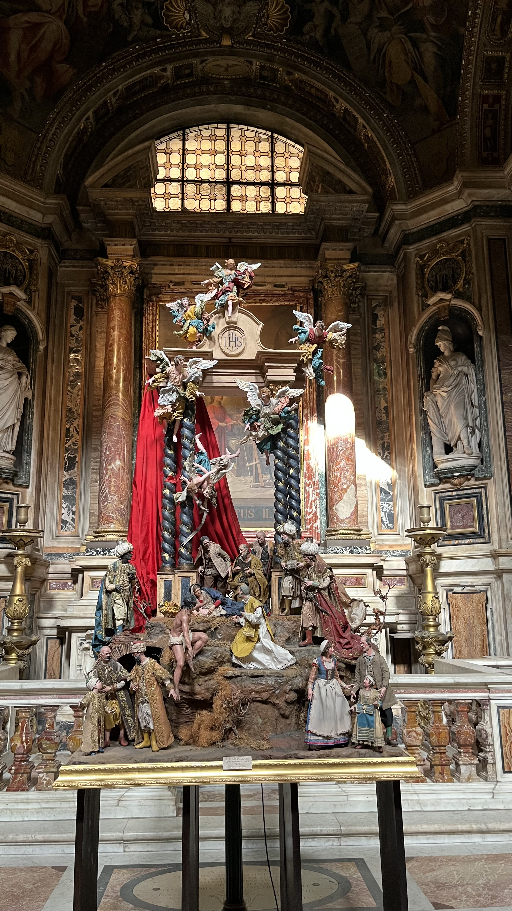
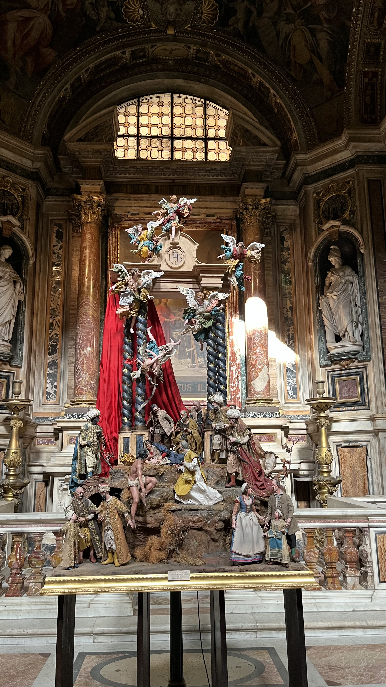

İtalya Günlüklerim
2025 Şubat ayında bir İtalya turu gerçekleştirdim.
Anılarımı paylaşmaktan mutluluk duyuyorum.
Öncelikle gördüğüm şehirler, geçirdiğim gün sayısı ve şehir puanlarımla başlayalım.
İtalya Turu Şehir Puanlarım
| Şehir | Gün Sayısı | Beğeni (1-10) |
|---|---|---|
| Roma | 4 | 10 |
| Milano | 2 | 7 |
| Venedik | 1 | 6 |
Roma - Detayları Gör
Gördüğüm en güzel şehir Roma ile detaylandırmaya başlayalım.
Bence Roma'nın en büyüleyici manzarası Colosseo metro çıkışında...
Kesinlikle görülmesi gereken yerler listesiyle devam etmek istiyorum.
- Önce en sevdiğim ve videosuyla desteklediğim: Kolezyum
- Trevi Çeşmesi
- Pantheon
- Vatikan Müzeleri & Sistina Şapeli
- Venezia Meydanı & Vittorio Emanuele II
- Chiesa del Gesù
- İspanyol Merdivenleri
Eğer İspanyol Merdivenlerinin konumuna ulaşmak isterseniz aşağıdaki butona tıklayabilirsiniz.
Chiesa del Gesù'da çektiğim bazı fotoğrafları sizlerle paylaşıyorum.


 

Milano - Detayları Gör
Modanın kalbi Milano'da geçirdiğim 2 gün alışveriş odaklı, yağmurlu ama bir o kadar da keyifliydi.
- Duomo di Milano
- Galleria Vittorio Emanuele II
- La Scala
- Santa Maria delle Grazie